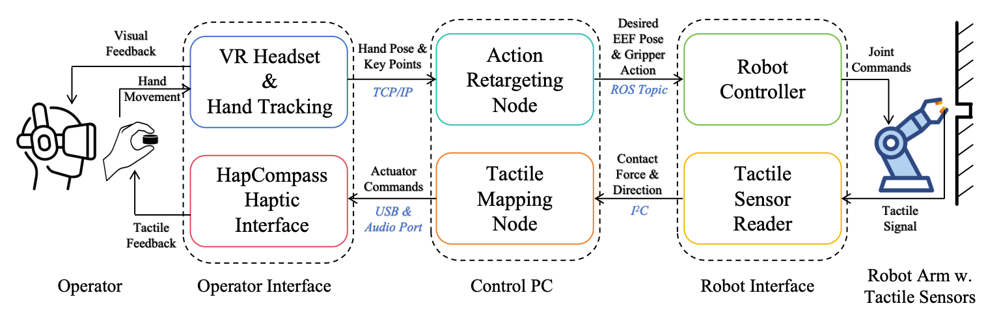
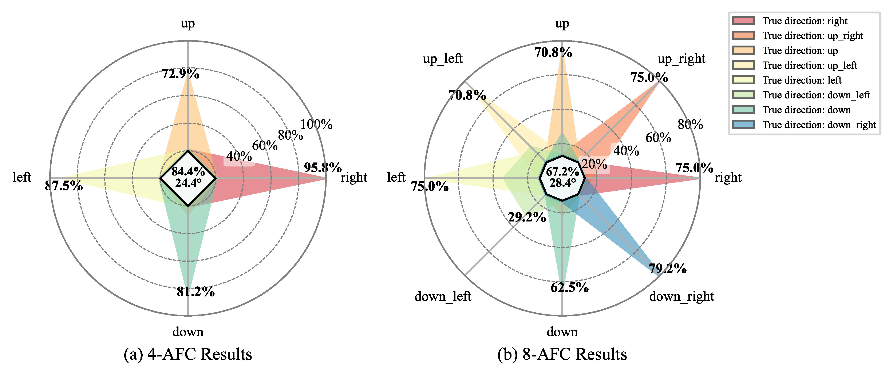
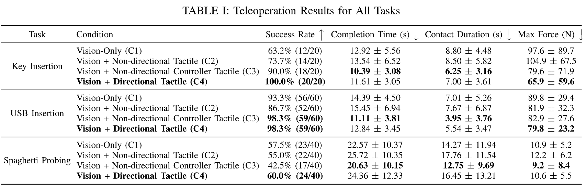

The contact-rich nature of manipulation makes it a significant challenge for robotic teleoperation. While haptic feedback is critical for contact-rich tasks, providing intuitive directional cues within wearable teleoperation interfaces remains a bottleneck. Existing solutions, such as non-directional vibrations from handheld controllers, provide limited information, while vibrotactile arrays are prone to perceptual interference. To address these limitations, we propose HapCompass, a novel, low-cost wearable haptic device that renders 2D directional cues by mechanically rotating a single linear resonant actuator (LRA). We evaluated HapCompass's ability to convey directional cues to human operators and showed that it increased the success rate, decreased the completion time and the maximum contact force for teleoperated manipulation tasks when compared to vision-only and non-directional feedback baselines. Furthermore, we conducted a preliminary imitation-learning evaluation, suggesting that the directional feedback provided by HapCompass enhances the quality of demonstration data and, in turn, the trained policy.
HapCompass provides a complete teleoperation system for contact-rich robotic manipulation comprising three core components: a wearable haptic device, an architecture for data and control flow, and a rendering algorithm that translates robot sensor data into directional tactile cues.

Objective: To quantitatively measure whether participants can understand directional information rendered by the HapCompass device.
Task: Participants performed two direction-identification tasks: (1) a four-alternative forced-choice (4-AFC) task involving the four cardinal directions (up, down, left, right); and (2) a more challenging eight-alternative forced-choice (8-AFC) task that also included the four intercardinal directions. The results show that participants can interpret the directional cues from the HapCompass device with accuracies significantly above chance level in both tasks.

Objective: Evaluate the effectiveness of the HapCompass system in improving operator performance during contact-rich manipulation tasks.
Tasks: We designed three tasks to assess performance across different challenges in contact-rich manipulation: Key Insertion, USB Insertion, and Spaghetti Probing.

@inproceedings{tan2026hapcompass,
author = {Tan, Xiangshan and Ji, Jingtian and Jiang, Tianchong and Lopes, Pedro and Walter, Matthew R.},
title = {HapCompass: A Rotational Haptic Device for Contact-Rich Robotic Teleoperation},
booktitle = {Proceedings of the IEEE International Conference on Robotics and Automation (ICRA)},
year = {2026},
}